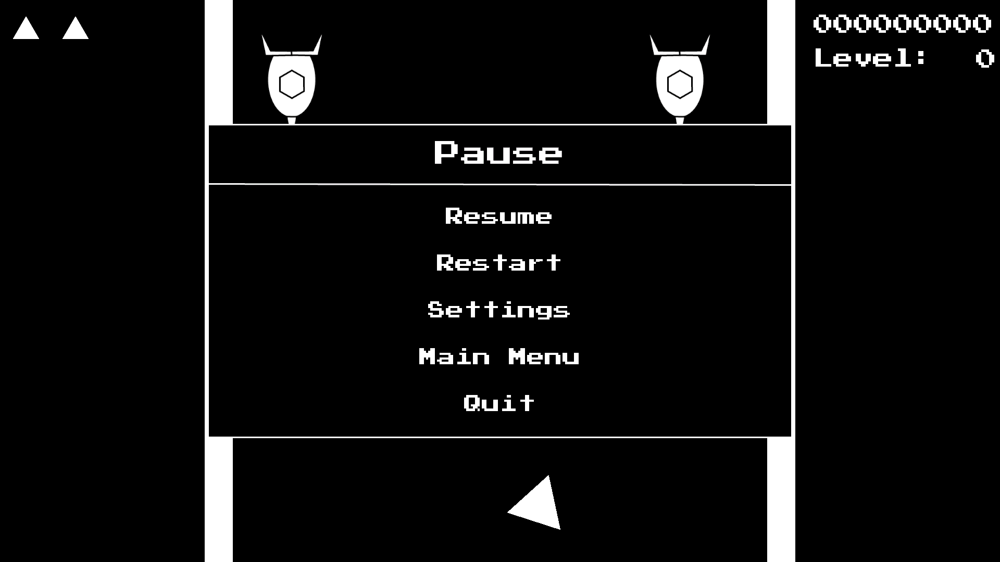
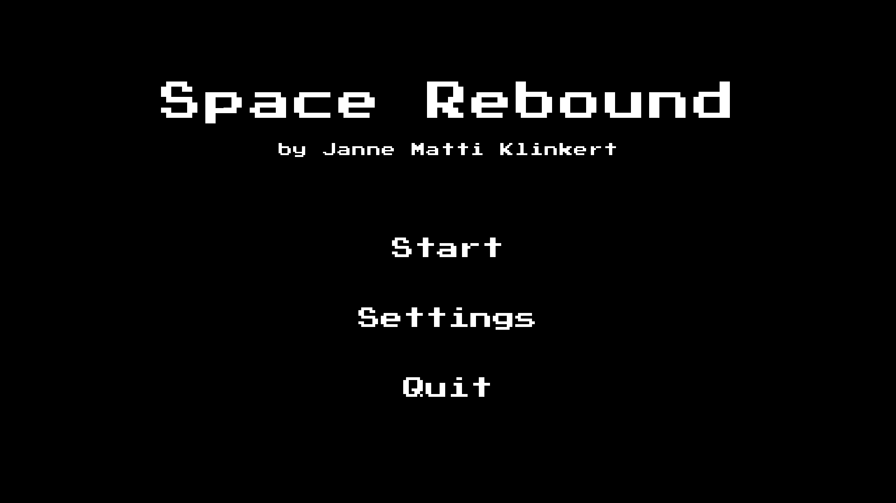
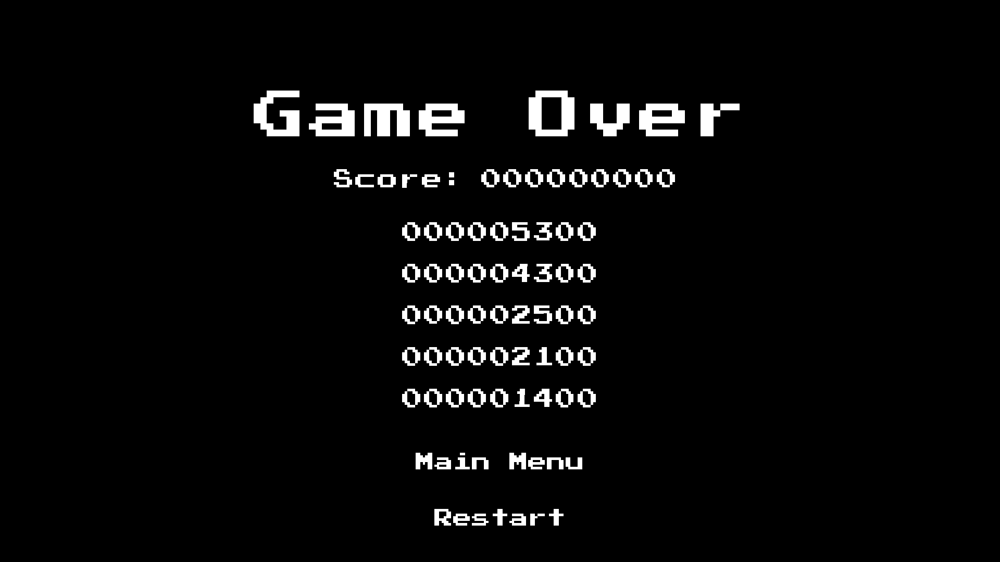
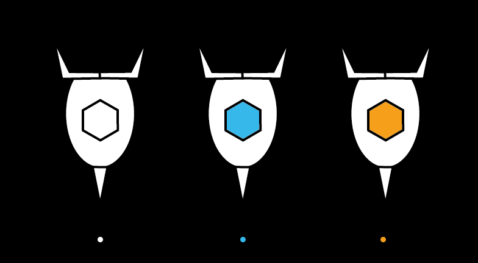

Overview
The idea of a game built around ricochet mechanics had been stuck in my head for years, so when I started studying media informatics and had to make my first game, I decided to finally put it into practice as a small, simple, space-themed arcade game.
Mechanically, the game is quite simple. The player character (a triangular sprite representing a spaceship) can be moved left or right either via the arrow keys or via the "A" and "D" keys respectively. The triangle always faces towards the mouse, and the player can shoot bullets by pressing the left mouse button. The bullets bounce off walls, becoming stronger and changing their colour. With each bounce, they go from white to blue to orange. Enemies (custom spaceship sprites) come in these three colours as well, which signals how much damage they deal, how strong a bullet needs to be to hurt them, and how many points they award the player for defeating them. After reaching specific score counts, the player reaches the next level (without disrupting any gameplay). With every new level, more enemies and stronger enemies appear on average, until the final level is reached and the game goes on until the player is defeated, saving their score in a local leaderboard.
This was probably the smoothest development process I have had so far, mostly because the project worked well even with a small scope of features. I was able to build it continuously over a few months, one step at a time, without needing to change direction or refocus my vision. It started humble, it stayed humble, and it was an amazing project for teaching me the fundamentals of game development in Unity.
Looking at the project now, I still see areas that could be improved. More varied and interesting enemies would make the gameplay loop more exciting and open the door for unique level configurations with enemy types that have synergies or more complex gameplay interactions. In the same breath, the enemy balancing would need another look, as the core ricochet mechanic makes stronger enemies exponentially harder to defeat, while the weakest enemy type can be defeated without ricocheting bullets at all, making them feel like an afterthought.
Gallery
Below are screenshots and GIFs showcasing Space Rebound in action, along with early prototypes and design iterations.




Technical Details & Systems
Architecture & Implementation
My original vision proved to be a perfect challenge for learning the basics of Unity: translating the mouse cursor position into a rotation so the player character always faces it, instantiating objects and giving them behaviour with a complete lifecycle without interfering with the game's physics, and working with particle systems, custom fonts, and music.
Engine
Unity 2022+ with C#
Gameplay Systems
2D physics for bullet behaviour, collision detection, simple enemy behaviours, saving data between gameplay sessions
Team Size
Solo Developer
Ricochet System
The core ricochet mechanic uses Unity's 2D physics with fully bouncy rigidbodies. When a bullet collides with a wall, it gains a strength increment and changes colour accordingly—white, blue, then orange. When a bullet hits an enemy, the enemy checks the bullet's current strength against its own: if the bullet is strong enough, the enemy is defeated and the bullet's strength is reduced by the enemy's value. This means a strength-2 bullet that kills a strength-1 enemy survives as a strength-1 bullet, creating satisfying chain-hit moments.
Enemy Spawning
Enemies spawn off-screen at a random horizontal position between the two walls. The type of enemy spawned is determined by weighted probabilities tied to the current level—early levels heavily favour weak enemies, while later levels shift the odds toward stronger types. This keeps the difficulty curve feeling natural without requiring hand-placed enemy encounters.

Score Persistence
The leaderboard stores high scores using Unity's PlayerPrefs system, which was the simplest approach for a first project. Looking back, a JSON-based solution would be more robust and portable, but PlayerPrefs served the purpose well for a local-only leaderboard.
Key Challenges & Solutions
The development process was largely obstacle-free. I did have some trouble with my custom font, because the default font settings made it look blurry—quite bad for an 8-bit font. After a day of research, even this was easily resolved.
What I Learned
The biggest lesson this project taught me was keeping the scope small and reasonable. It felt great working on it because I could actually reach the goals I set. Additionally, it was my first deep dive into Unity and C#, and it was a lot of fun getting to know the workflow. In the end, I was holding my first fully functional, finished game in my hands, and I am quite happy with the result.
Play Space Rebound
Space Rebound is playable on Itch.io. Try it out and see if you like it!